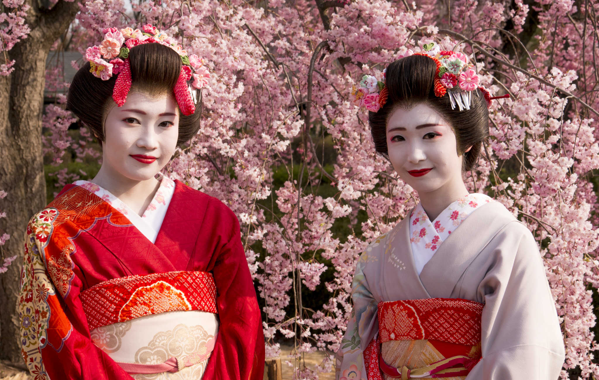
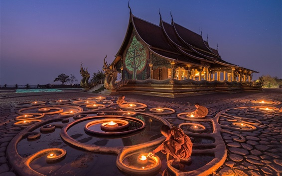
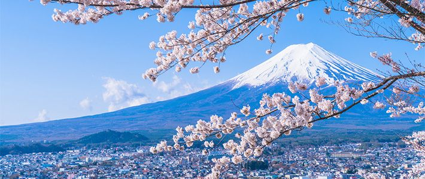
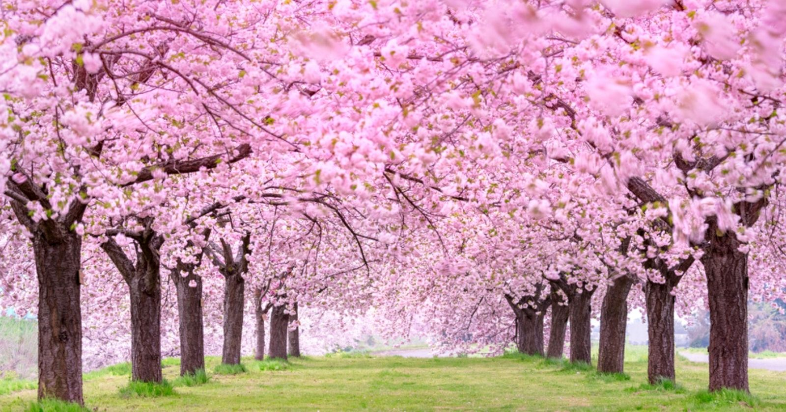
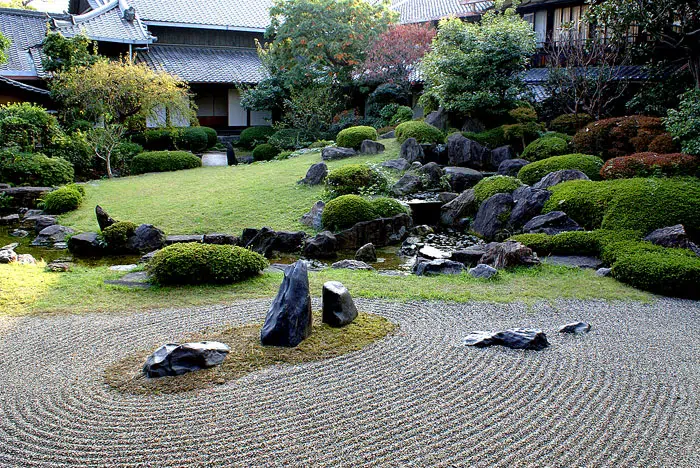
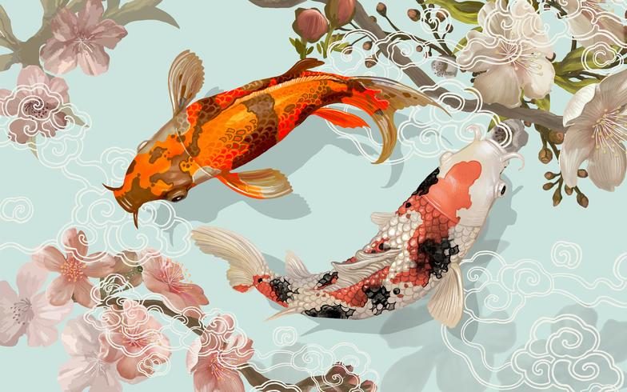
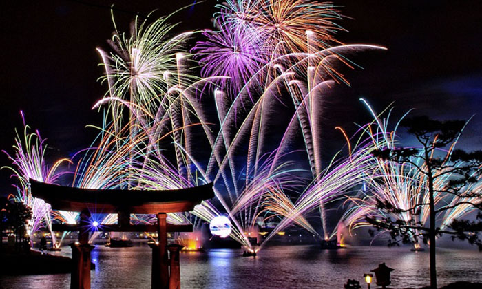
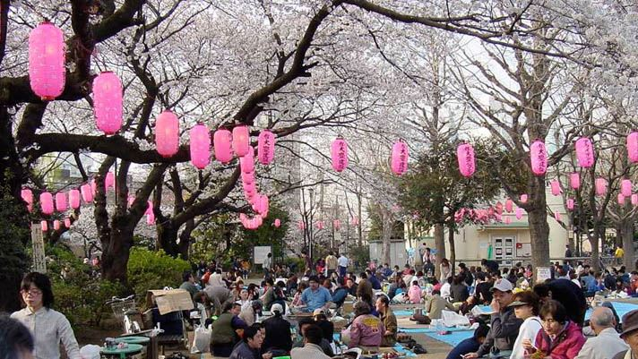
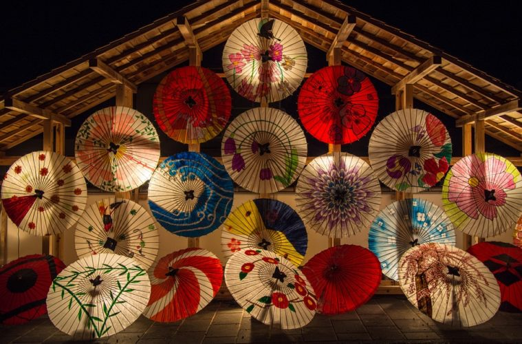
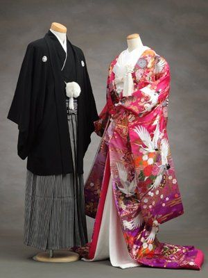

Symboles
Drapeau japonais
Le Japon étant considéré comme le pays du soleil levant, le rond rouge de son drapeau est le symbole du soleil.
Les geishas
Sujets de multiples œuvres à travers le monde, les geishas sont les plus grands symboles féminins du Japon.
Les temples bouddhistes
Pays de tradition et de religion, le Japon a su préserver et mettre en valeur ses temples, sanctuaires et châteaux, dont nombre sont classés au patrimoine mondial de l’UNESCO.
Le mont fuji
Véritable lieu de culte et de pèlerinage, le Mont Fuji est aussi une source formidable d’inspiration pour les artistes du pays et d’ailleurs.
Les cerisiers japonais
Emblème du Japon depuis toujours, le Sakura (cerisier japonais) est le symbole de la beauté éphémère. Sa floraison, qui a lieu de fin mars à mi-mai, donne lieu à de nombreux festivals (Hanami) dans le pays.
Les samouraïs

Les samouraïs ont dirigé le Japon pendant toute la période féodal (soit près de 700 ans !). Il est dit que l’âme du samouraï est son épée, et qu’elle doit mourir au combat.
Les bonzaïs

Ces arbres sont miniaturisés par des techniques très spécifiques, dont la maitrise est considérée comme un art à part entière depuis 1934.
Jardin zen
Composés de sable, de rocher, de gravier, de mousse et très peu d’autres plantes, les jardins zen sont synonymes de détente au Japon. L’eau ne pouvant y être utilisée, on la simule en dessinant des vagues sur le sable.
Les carpes koï
Symbole d’amour et de virilité, la carpe KoÏ existe dans de nombreux coloris. Certaines espèces peuvent vivre jusqu’à la cinquantaine, c’est pourquoi ces carpes représentent la force et la persévérance.
Fêtes et Religion(s)
Fêtes
LE NOUVEL AN:
du 1er janvier (férié) jusqu'au 3 janvier : L’un des événements les plus importants de l’année. Tout le monde se retrouve autour de plats symboliques comme la soupe « spécial nouvel an » (légumes et mochi) ou soupe aux 7 herbes, et des plats soigneusement présentés dans des boîtes laquées. On joue en famille aux jeux traditionnels, on envoie ses cartes de vœux accompagnées d’un billet de loterie. Le 2 janvier, on calligraphie ses bonnes résolutions.
TOKA EBISU (FÊTE DU SUCCÈS EN AFFAIRES)
Du 9 au 11 janvier : La déesse protectrice des affaires et de la pêche est honorée à cette occasion. Cette fête a lieu au sanctuaire Imamiya Ebisu à Osaka et dans la région du Kansai. Le 9, on fête le « réveillon d’Ebisu ». Le 10, lors du spectaculaire défilé du Palanquin d’Osaka, les fukumusume distribuent des branches de bambou décorées d’amulettes. Le 11 enfin, est considéré comme le « dernier jour de la dernière chance » pour se rendre au sanctuaire.
SEIJIN-NO-HI:
Le deuxième lundi de janvier : Les jeunes gens qui auront vingt ans dans l’année fêtent le jour de la Majorité. Une cérémonie est organisée dans les mairies. Les élus dispensent alors des sermons sur la responsabilité et les devoirs qui incombent aux jeunes adultes. Après une visite au temple ou au sanctuaire, ils pourront fêter dignement l’événement.
HINAMATSURI (FÊTE DES POUPEES OU DES PETITES FILLES):
Du 1er au 3 mars : Les petites filles exposent sur un présentoir leur collection de poupées, représentations des personnages de la cour de Heian. Ces objets précieux et particuliers (avec lesquels on ne joue pas) sont transmis de génération en génération et se conservent à l’abri des outrages tout le reste de l’année. Le 3, la collection est soigneusement rangée jusqu’à l’année suivante, sans quoi, selon la tradition populaire, la jeune fille de la maison ne trouvera pas de mari.
SETSUBUN
La veille du premier jour de printemps : Les Japonais ont coutume de lancer des graines de soja grillées à l’extérieur de la maison. Ils proclament alors : « Les démons à l’extérieur ! Le bonheur à l’intérieur ! ». Des spectacles sont organisés dans les sanctuaires shinto. Vous resterez en bonne santé une année entière si vous mangez autant de haricots que votre âge comporte d’années.
 HANAMI
Avril : La floraison des cerisiers est une affaire de grande importance. L’agence météorologique nationale rend compte chaque jour de l’avancée du « front de la floraison ». Pour servir de repère, cinquante-neuf arbres témoins sont désignés sur tout le territoire. Ils donnent le signal du pic de floraison (80 % des fleurs sont écloses). Alors, unanimement, les Japonais s’égaient dans les parcs pour profiter de cette vision magique. Le pays tout entier semble avoir l’humeur aussi légère que les pétales des fleurs.
KOMODO NO HI (FÊTE DES ENFANTS OU DES GARÇONS)
Le 5 mai : Le pendant de la fête des petites filles. Cette fête chinoise est introduite au Japon au VIe siècle. Elle fut d’abord réservée aux enfants des samouraïs à qui l’on offrait ce jour-là des pièces d’armure. Cette tradition s’incarne aujourd’hui dans les samouraïs miniatures offerts pour l’occasion. On souhaite aux jeunes garçons d’être aussi forts que les carpes remontant les courants. C’est pourquoi des guirlandes de papier représentant le poisson légendaire sont suspendues dans les rues.
GION MATSURI
Juillet : À Kyoto, voici une fête plus que millénaire, dont la première vocation est de repousser les dangers hors de la ville. Elle est avec les matsuri de Tenjin et Kanda, un rendez-vous incontournable. Les réjouissances durent trois jours, avec pour point d’orgue le Yamahoko Junko, un défilé de chars, de tambours et gongs (Gion-bayashi).
FESTIVAL DES BATEAUX
Les 24 et 25 juillet : Lors de ce festival millénaire à Osaka, les bateaux (de l’esquif au yacht) croisent sur la rivière Dojima transportant des effigies des divinités et de petites lanternes. Le défilé de personnages en costumes moyenâgeux est un autre temps fort du festival placé sous le patronage du sanctuaire Tenmangu.
FÊTE D'O-BON
Autour du 15 août : Pour accueillir les esprits des morts et le dieu des chemins, les Japonais retournent dans leur ville d’origine et embellissent les tombes de leurs ancêtres. Elle est avec le Nouvel an et le Golden week, une période traditionnelle de vacances.
Religion
Le shintoïsme est la religion traditionnelle du Japon (polythéisme et sacralisation de la nature). Il imprègne profondément la sensibilité japonaise ; la figure de l’empereur lui est liée. Le bouddhisme est arrivé au VIe siècle via la Chine et s’est adapté aux réalités locales. L’école chan, en particulier, qui se fit « zen » au pays du Soleil Levant. Des courants shinto-bouddhistes sont apparus. Le christianisme a eu une histoire chaotique ; aujourd’hui, catholiques et protestants s’affirment, mais ils sont ultra minoritaires. Dans la pratique, les Japonais ont une attitude utilitaire et syncrétique à l’égard des religions : on y a recours selon les « puissances » qu’elles représentent.

Vêtements
Le kimono
Si l’on vous parle de vêtement japonais traditionnel, la première image qui vous vient en tête doit sûrement être celle d’un kimono. En effet, cette longue robe aux manches larges est devenue un véritable symbole de la culture nippone. Reconnaissable avec sa forme en T et son magnifique obi de kimono, ce vêtement ne cesse de fasciner les plus grands couturiers du monde.
Le yukata
Très souvent confondu avec le kimono, le yukata est un vêtement traditionnel beaucoup moins formel, inadapté pour les cérémonies ou autres événements à caractère officiel. Contrairement au kimono qui est fait de soie ou de laine, le yukata est une sorte de kimono d’été, léger et décontracté, en coton.
Le Haori
Le haori est une veste japonaise traditionnellement portée par-dessus le kimono. Bien que la coupe et le tissu du haori soient généralement identiques à ceux du kimono, la veste ne se ferme pas en croisant les deux pans. Elle se porte ouverte ou bien nouée sur le devant à l’aide d’une petite cordelette, le but étant de laisser apparaître les belles couleurs du kimono et de la ceinture obi.
Le Jinbei
Le jinbei, habit traditionnel japonais, est principalement porté par les hommes comme vêtement d’intérieur. Composé d’un pantalon court et d’une veste à manches courtes assortis, ce vêtement deux pièces est en coton afin de laisser respirer la peau. De ce fait, le jinbei est très apprécié en été où il peut être porté au même titre qu’un yukata.
Le Hakama
Le hakama est un pantalon japonais traditionnel large et plissé. Autrefois, ce vêtement était réservé aux nobles et aux samouraïs, hommes comme femmes. Le hakama est porté par-dessus le kimono et resserré au niveau de la taille.
Les Geta
Les geta sont les sandales japonaises traditionnelles par excellence. Ces chaussures sont composées d’une semelle en bois surélevée, ou non, sur une ou deux plateformes appelées des « dents ». Le pied est maintenu sur la semelle grâce à la lanière en tissu épais. Les dents peuvent varier en hauteur et en largeur, suivant le type de geta. Perchés sur leur semelle en bois, les Japonais peuvent ainsi se déplacer sans abîmer leur kimono par terre.
Les Tabi
En japonais, le terme tabi signifie « sac à pied », une image amusante pour désigner ces fameuses chaussettes japonaises traditionnelles à deux doigts. Mais pourquoi diable vouloir séparer le gros orteils du reste des orteils ? Tout simplement pour pouvoir glisser la lanière des geta entre les orteils.
savoir-vivre
Quelques règles de politesse à respecter au Japon. La politesse, la modestie, la propreté, la ponctualité et le respect d'autrui sont les fondements du savoir-vivre japonais. Évitez tout contact physique avec un japonais. Pas de bise ou de poignée de main, mais une légère inclinaison.